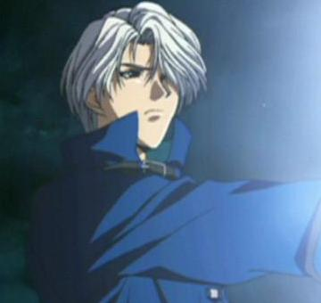

Forums galactiques > Taverne galactique : lieu de discussion informel > Nouveau jeu
| Horohoro Réputation à la taverne : 1130  06/08 ETU 17:35 | Score : 0 Détails C'est LE-ROI-Conan!! j'en suis sur!!
| ||
| KURT Réputation à la taverne : 377  06/08 ETU 20:02 | Score : 0 Détails J'ai trouvé: Rescator
| ||
| Rescator Réputation à la taverne : 0  06/08 ETU 20:37 | Score : 0 Détails On m'a appelé?
| ||
| général locius Réputation à la taverne : 626  06/08 ETU 20:38 | Score : 0 Détails oui c'est rescator
| ||
| Booster Réputation à la taverne : 1494  06/08 ETU 20:39  | Score : 0 Détails Hum possible...
On verra bien... | ||
| Rescator Réputation à la taverne : 0 06/08 ETU 20:41 | Score : 0 Détails Que se passe t'il?
| ||
| Booster Réputation à la taverne : 1494 06/08 ETU 20:42 | Score : 0 Détails On parlait d'un énième multi-compte de M.G
Comme il a déjà pris l'avatar du Rescator g1, pourquoi pas copier son nom tant qu'à y être... | ||
| Rescator Réputation à la taverne : 0 06/08 ETU 20:48 | Score : 0 Détails Ouais, le Commandant M.G.
On m'a dit qu'il m'avait pris mon avatar. Alors je suis venu me facher contre lui. Donc je ne suis pas un multi-compte du Commandant M.G. Car je fais partie de la Galaxie des exilés. Amicalement Le Commadant Rescator... | ||
| Naruse Réputation à la taverne : 1178  06/08 ETU 21:16 | Score : 0 Détails T'as qu'à en changer si tu veux pas qu'on te prenne pour lui.
| ||
| dragonfire17 Réputation à la taverne : 552  06/08 ETU 21:18 | Score : 0 Détails Ouai, effectivement, rescator n'en n'est pas un, il écrit trop bien.
| ||
| Rastapopulyps Réputation à la taverne : 452  07/08 ETU 06:12 | Score : 0 Détails Restons sur nos gardes, le programme Woord de Galactosoft fait des merveilles en correction automatique...
J'ai trouve! C'est Ares 2! Alors c koi la surprise? Un bisou infrasonique?? Bon okai... il etait deja grille... | ||
| Rescator Réputation à la taverne : 0 07/08 ETU 20:09 | Score : 0 Détails Ares 2 et dans mon système.
Et je vous le redis je ne suis pas le Commandant M.G. Avant que je commence la galaxie des éxilés, je m'étais fait un compte dans se système. C'etait Gorgutz de la planète WAAAGH. Voila vous savez tout maintenant. | ||
| sirvaseline Réputation à la taverne : 61  08/08 ETU 11:50 | Score : 0 Détails Moi je propose Katan. Je l'ai espionner suite à une attaque de sa part et son profil me parait fort bizarre.
Il n’a aucune unité militaire et il m’attaque tous les jours avec des quantités impressionnantes de kami et il a un compte en banque très bien fourni en leems métaux et diamants mais pas en énergie. Ce qui me trouble le plus reste tout de même sa puissance militaire. | ||
| revan Réputation à la taverne : 1671  08/08 ETU 11:58 | Score : 0 Détails c'est pas Katan
| ||
| Sanji Réputation à la taverne : 69  08/08 ETU 12:12 | Score : 0 Détails HRP //
Katan multi ? Et moi je suis la soeur de Cronos ouais ! Et coté kamis n'en parle pas à Revan il a du se prendre pres de 2 ma de kamis sur la tete alors que toi moins de 2 mo... Pour la bonne raison que c'est moi qui le fourni ^^ Mais il m'avait pas dit pour l'énergie, merci ;) Mais avec des conneries pareilles, tu devrais aller te cacher mon gars, je chasse les multis depuis la G1 beta2 j'en ai cassé un bon paquet a Cronos. Mais entendre des bétises pareilles, je trouve ça effarant, vas pas rejetter ton incapacité a prendre un pauvre système sur le multi. C'est le genre de trucs qui me fout hors de moi en tant que joueur. Je te salue pas.... | ||
| sirvaseline Réputation à la taverne : 61 08/08 ETU 12:44 | Score : 0 Détails Bravo, vous aidez des jeunes commandants dans leurs développements.
Mais ne serait il pas plus intelligent de leurs apprendre à jouer ? Votre chère Katan ne semble attaque que selon vos ordres et si, par mésaventure se retrouve sans votre soutient, il ne pourrait plus survivre bien longtemps. Vous êtes en train de créer un assister, incapable de subvenir à ses propres besoins et incapable de s’étendre sans vos informations. Encore bravo. Je ne pourrirais plus ce topic avec ce sujet. Ce n’était que pour répondre à notre cher freluquet qui semble décider à pourrir cette galaxie avec ses pauvres sbires. PS : Katan est il bête au point de ne pas savoir répondre par lui-même ou vous lui en interdisez ? | ||
| Katan Réputation à la taverne : 22  08/08 ETU 13:28 | Score : 0 Détails [hrp]
sbire ? non, si tu avais lu le rp que Sanji et moi avons monté tu dirais pas ça, c'est vrai que pour lire il faut savoir le faire n'est ce pas ? Sanji vient de me téléphoner pour me dire de rester calme, ça je le fais, je n'ai pas envie de me faire suspendre pour insulte bien que ce soit pas l'envie qui m'en manque de te traiter de tous les noms d'oiseaux qui me passent par la tête. Moi et le blondinet faisons un rp commun, mais bon, faut pas trop t'en demander, avec un pseudo comme ça, je comprends meme pas pourquoi Dieu t'as pas kické. Et tu peux attendre que je réponde a tes MPs, je le fais rarement, pas par manque de temps mais parce que le personnage de Katan ne voit pas pourquoi il devrait se justifier et ne s'exprime jamais directement a une personne. Il est clair que les notions de rp ne sont pas à ta hauteur donc je vois pas pourquoi je me fatigue.... [/hrp] | ||
| sirvaseline Réputation à la taverne : 61 08/08 ETU 14:09 | Score : 0 Détails Tu es donc incapable de tenir un discours construit et obligé d’être aussi vulgaire ?
Tu critiques mon pseudo mais si je l’ais choisi ce n’est pas pour te plaire et c’est un choix qui ne concerne que moi. Je n’ais donc pas de compte à rendre à ce sujet. En ce qui concerne tes critiques sur mon niveau intellectuel, je te les renvoie volontiers, car si tu ne l’avais pas encore compris, ce n’est pas seul qu’on gagne une guerre mais avec ses alliers. Et toi qui te vente d’un fabuleux niveau, si c’était vraiment le cas, les planètes que tu voles ne seraient pas aussi facile à reprendre. Moi je fais ce que je peux avec mes petits moyens pour les défendre car, je le rappel encore une fois, je ne suis que jeune commandant. Et si tu savais aussi si bien lire, tu aurais pu voir que mes déductions n’étaient pas posées sur une simple supposition de ma part mais sur des renseignements et en concertations avec un autre commandant. Encore désolé pour ce topic. | ||
| Lia Réputation à la taverne : 2740  08/08 ETU 14:13 | Score : 0 Détails [hrp]
Vous comptez faire descendre le niveau à chaque réponse? Est ce que vous allez comprendre que toute cette discussion n'a pas sa place ici (et n'a meme pas lieu d'etre), ou il faut vous l'expliquer? Le sujet initial n'est déjà pas très utile ("parlons d'un boulet"), mais après avoir touché le fond, vous creusez plus bas. Et si vous jouiez à Apocalypsis, pour changer? |
Forums galactiques > Taverne galactique : lieu de discussion informel > Nouveau jeu